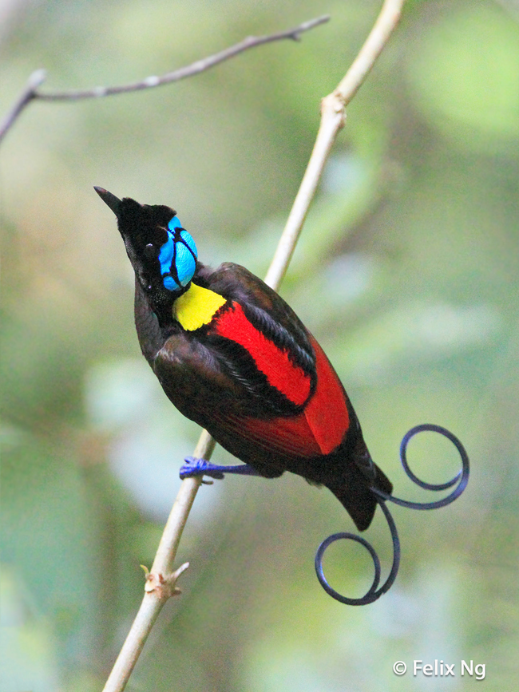
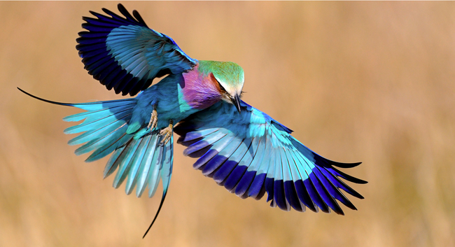
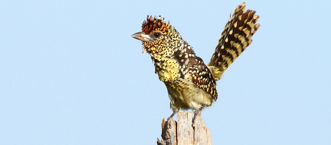
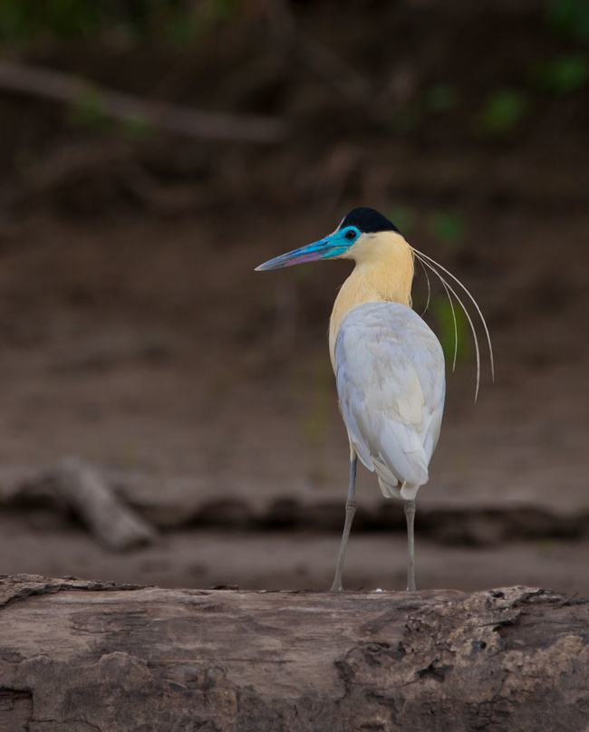
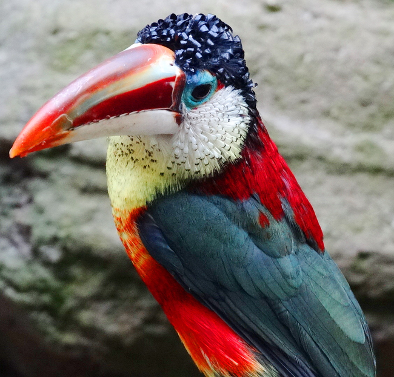

We promise that you've never seen these birds on Animal Planet. They're rare, exotic, and a must see on your radar. Because from super horned birdies from South America, to the crowned kings of the jungle, these 20 colorfully awesome birds will leave you wondering how those TV shows ever missed them.
1. Wilson's Bird-of-Paradise

Oddly, the turquoise crown of the male is actually a patch of bare skin, not feathers.
2. Long-Tailed Widowbird

Hailing from South Africa, the male of the species can have a tail over 16 inches long.
3. Lilac-Breasted Roller

He gets his name from an impressive courtship flight that dives in short bursts and motions, accompanied by loud noises.
4. D'Arnaud's Barbet

This is one of 42 barbet species, all of which are found in sub-Saharan Africa.
5. Capped Heron

Their "paws" are muffled, so good luck finding this recluse bird.
6. Curl-Crested Aracari
